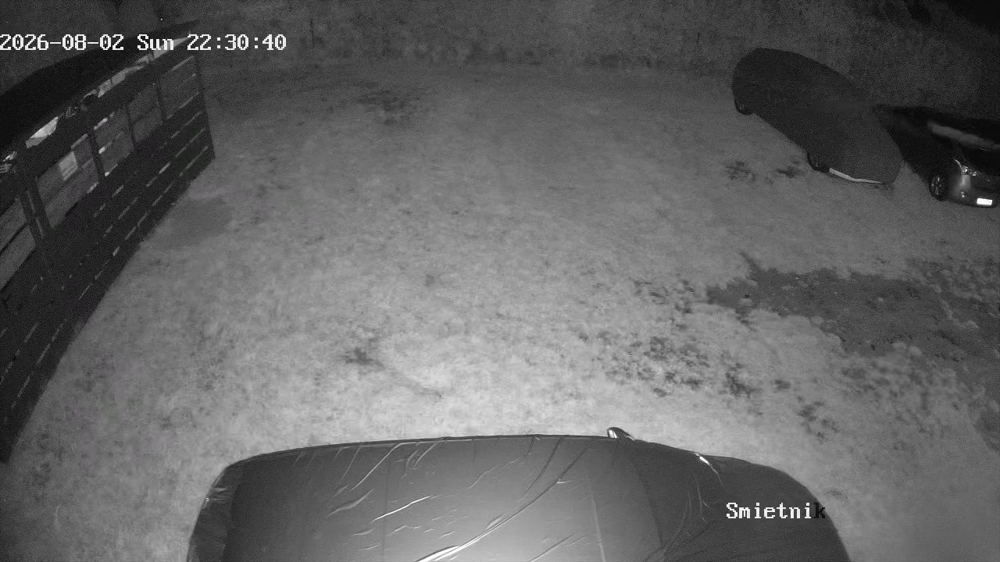
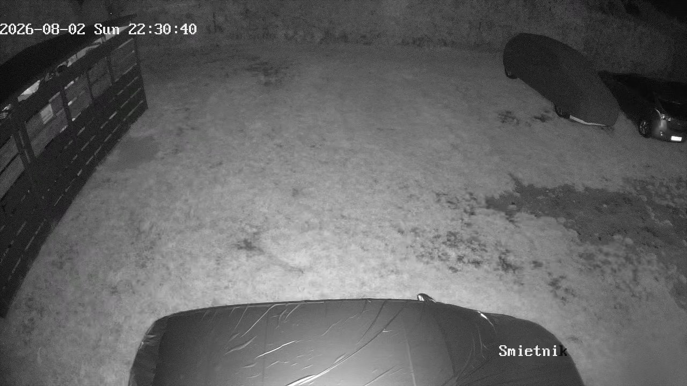
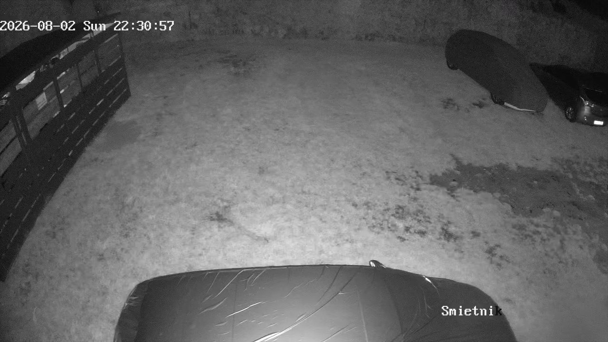
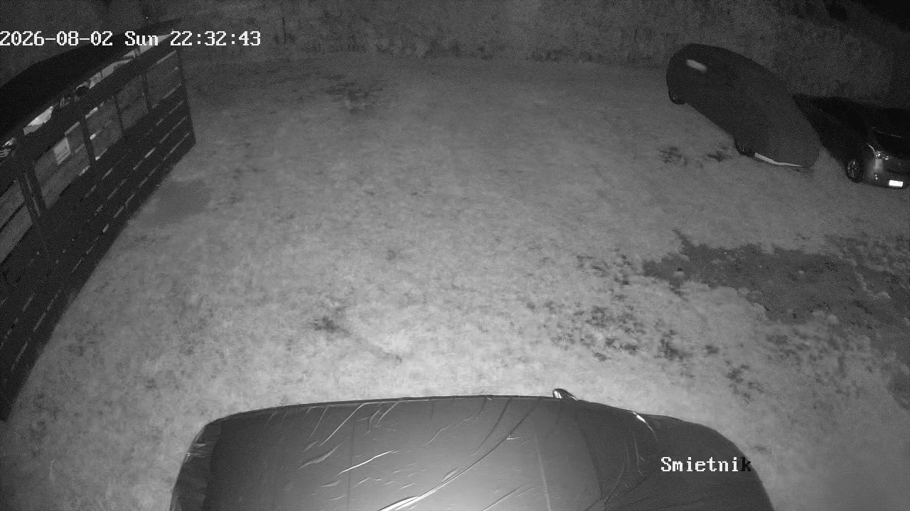
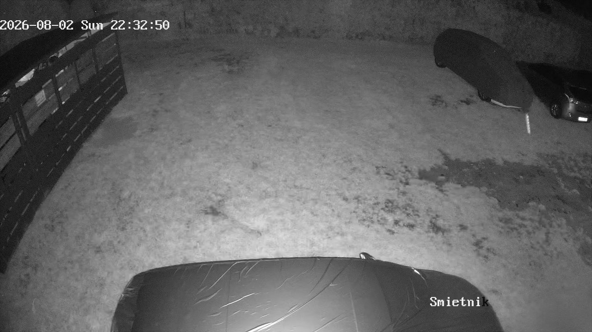

Segment 22:29:15 – 22:39:15, czyli środek szczytu aktywności kuny.
Z 2400 sprawdzonych klatek wyszło 16 kandydatów.
Zapisywane były tylko te, gdzie ruch jest przy autach, a reszta kadru stoi —
to odsiewa deszcz, zmianę światła i przełączenie na podczerwień.
„Plama" to wielkość ruchomego obiektu w pikselach. Kuna powinna dać
kilkaset; 2400 to raczej człowiek albo auto.









Pełny obraz kamery, prostokąt z autami jest w prawej górnej części kadru.